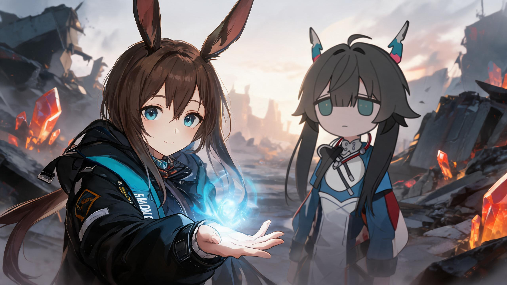
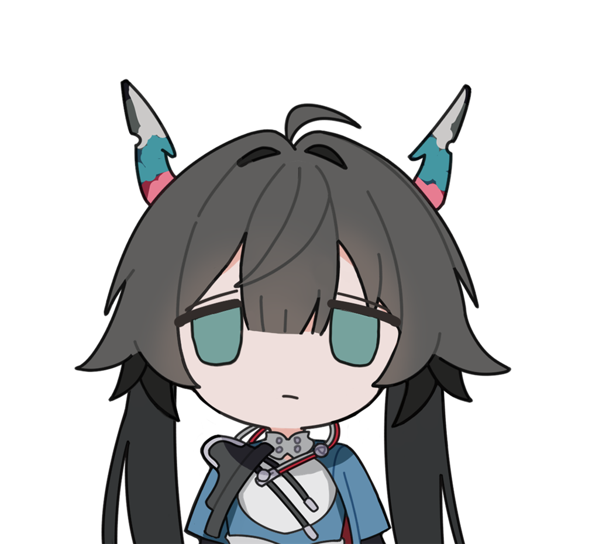

天灾过后的废弃都市，源石结晶在余烬中呼吸。罗德岛的领袖与一名独自求生的双角少女，在废墟中央相遇——这不是一场战斗，而是一次伸手。
泰拉大陆，天灾频发，源石结晶如花般从大地裂痕中绽放，也把「感染者」的烙印刻进无数人的命运。罗德岛以医药之名行走于废土之上，收容、治疗、并在必要时刻举起武器。
本片取景于一次天灾后的都市废墟。两位少女，一个背负着整个组织的重量，一个只背负着自己的生存——她们的对峙，没有胜负，只有选择。

卡斯特族少女，棕色长发与一对兔耳，湛蓝的眼睛里盛着与年龄不符的沉静。黑色机能大衣印着 RHODES ISLAND 的编号，是她身份的徽记。她从不先拔刀——她总是先伸手。

灰黑双马尾，青绿色瞳孔，一对自灰白渐变至青蓝、再沉入品红的弯角，是她与生俱来的印记。蓝白战装配白色红边披风，胸前永远横着一把武器。冷漠是她的盔甲，而角尖的微光会出卖她的心绪。
紫橙色的黄昏压在天灾过后的废弃都市上，巨大的橙红源石结晶在废墟中央缓缓呼吸。阿米娅自画面左侧走入，兔耳微颤，目光扫过每一处瓦砾——她在寻找幸存者，而不是敌人。
结晶旁，背对镜头的小陈猛然回头。她握紧胸前的武器，双角泛起青蓝色微光——那是源石技艺将启的征兆，也是恐惧的具象。风掀起她的双马尾与披风，戒备在她眼里结成一层薄冰。
阿米娅没有举刀。她缓缓放下戒备，向小陈伸出右手，掌心凝起柔和的蓝色源石技艺光芒，光点旋转上升。小陈怔住了——那是她第一次看见，力量可以不是用来伤害的。
两只手紧紧相握，周遭所有源石结晶同时亮起温柔的蓝光，火星与余烬在风中飞舞。镜头缓缓升空，两个身影并肩走向地平线上那座灯火通明的移动城市——罗德岛，天光渐亮。
「在泰拉大陆，每一颗孤独的心，都在等待一束光。」